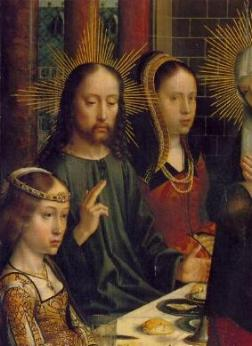
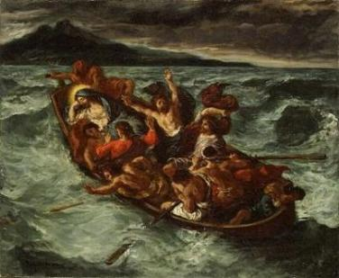
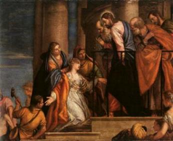
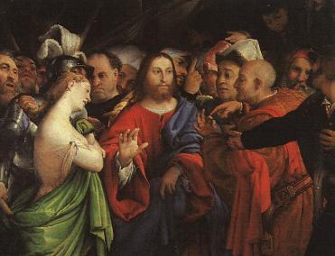

- Convidado a participar de um Casamento em Cana, na
Galileia,
- Convidado a participar de um Casamento em Cana, na
Galileia, compareceu em companhia de Sua MÃE e alguns Discípulos.
compareceu em companhia de Sua MÃE e alguns Discípulos. - Convidado a participar de um Casamento em Cana, na
Galileia, compareceu em companhia de Sua MÃE e alguns Discípulos.
Este Matrimônio ficou famoso e inesquecível na mente dos cristãos, porque foi nele, que a pedido de sua MÃE, JESUS fez o primeiro milagre. Através dos versículos escritos por São João Evangelista, não é difícil perceber que desde aquele momento, o SENHOR estabeleceu sua SANTA MÃE, como poderosa intercessora em benefício da humanidade, ao acolher o pedido materno em favor dos nubentes.
Em pleno auge da festa matrimonial, que no costume judaico durava até uma semana, o vinho acabou. Imaginem o tamanho do “vexame” dos noivos e de seus respectivos pais!
Maria sempre atenta aos acontecimentos percebeu o que estava ocorrendo. Aproximou-se de JESUS e com sua maravilhosa simplicidade comentou:
“Eles não tem vinho”. (Jo 2,3)
JESUS, que naturalmente também havia percebido, respondeu-lhe à maneira semítica, em tom de voz bem reservado:
“Que temos nós com isso, mulher? Minha hora ainda não chegou”. (Jo 2,4)
Os semitas falavam a palavra “mulher” do mesmo modo como hoje nós pronunciamos a palavra “senhora”, com respeito e atenção. E também, é a mesma maneira afetiva como nós de origem latina pronunciamos o nome “mãe”. Assim sendo, podemos dizer que a resposta de JESUS, interpretando o sentimento semita, foi assim:
“Não nos preocupemos com eles, minha Mãe. Não chegou o momento para iniciar com os sinais”.
 - Todavia, Maria conhecia muito bem o seu FILHO e sabia
que a bondade de seu Coração era muito grande, não iria permitir àqueles que
celebravam as Bodas, sofrerem a vergonha e o desprazer de ver o vinho acabar,
quando as comemorações atingiam um clímax. Por esta razão, disse aos
“Fazei tudo o que ELE vos disser”. (Jo 2,5)
Existiam ali seis talhas de barro, com capacidade aproximada de 100 litros cada uma, que eram usadas para a purificação das mãos e pés dos judeus. JESUS lhes disse:
“Enchei as talhas de água”. (Jo 2,7)
Eles obedeceram. A seguir, o SENHOR ordenou-lhes que as levassem ao “mestre de cerimônia”. Este ao receber aquelas seis talhas com um especial e delicioso vinho, ficou admirado e exclamou:
“Todo homem serve primeiro o bom vinho e, quando os convidados já estão embriagados, serve o pior. Tu guardaste o bom vinho até agora!” (Jo 2,10)
O noivo, a quem o mestre de cerimônias dirigiu suas palavras ficou embaraçado, pois não sabia o que dizer e nem conhecia a procedência do vinho. Mas os serventes sabiam e nada disseram, por ordem de JESUS.
E todos, com bastante alegria, participaram da festa em Cana da Galileia.

- Iniciando a Vida Pública, ELE empreendeu um notável
atendimento as pessoas que O procuravam. Eram caravanas vindas de todas as partes,
de Cafarnaum e arredores, assim como dos locais mais distantes, trazendo doentes
com problemas físicos e mentais, que buscavam a cura de seus males e um lenitivo
para as suas dores. Com o mesmo carinho e disponibilidade, atendia a todos,
restituindo a visão aos cegos, dando movimentos aos paralíticos,
assim como infundindo no coração de cada um, uma imensa vontade de
viver, amando e louvando a DEUS.


- Num daqueles dias, decidiu atender outras regiões.
Acompanhado dos Discípulos, pela manhã entrou numa barca e seguiu em direção
a outra margem do Lago de Genesaré. Decorrido algum tempo de atravessia,
deitou-se na proa e adormeceu. O mar ficou agitado, as ondas cresceram
e incidiam impetuosamente contra a embarcação “varrendo” o interior da mesma. Os discípulos
assustados O despertaram dizendo:
“SENHOR, salva-nos, estamos perecendo!”(Mt 8,25)
ELE levantou-se e disse:
“Porque sois tão covardes, homens de pouca fé?”(Mt 8,26)
Erguendo os braços, abrandou o vento e o mar, deixando os Apóstolos estarrecidos e repletos de admiração.

 - Esta passagem apresenta uma mensagem muito rica, que ilumina
a mente das gerações ao longo dos séculos, a fim de que as

- JESUS ao chegar na outra margem do Lago, na terra
dos gadarenos, veio ao encontro DELE um homem possuído por ferozes demônios.
Eram tão violentos, que ninguém podia passar por aquele caminho. Assim que O
viram, os demônios puseram-se a gritar:
“Que existe entre nós e ti, FILHO DE DEUS? Vieste aqui para nos atormentar antes do tempo?”(Mt 8,29)
A certa distância estava pastando uma
manada de porcos. Os demônios vendo, 
“Se nos expulsas, manda-nos para a manada de porcos.”(Mt 8,31)
ELE autorizou. Os demônios com grandes solavancos e ensurdecedores gritos, saíram daquele homem, entraram nos porcos e se precipitaram no Lago, pelo lado mais íngreme da encosta.
O homem ficou caído no solo, mas não queria afastar-se de JESUS. E assim, depois de agradecer emocionado por sua cura, pediu para permanecer na companhia DELE, enquanto aquelas pessoas que apascentavam os porcos, desnorteados com o acontecimento, correram para a cidade e espalharam a notícia.
O SENHOR não caminhou para a cidade, ficou ali mesmo, nas margens do Lago, ensinando aos Discípulos.
Depois de algum tempo, vieram diversas pessoas que residiam no local, nervosas e apavoradas com a ocorrência dos porcos, pedindo a JESUS que se retirasse dali e levasse com ELE o seu grupo, porque eram indesejáveis ao povo de Gádara.
Sem dúvida, eram pessoas muito ignorantes e ambiciosas, que não compreenderam o alcance do gesto do SENHOR. Não perceberam a grandeza da misericórdia Divina e o quanto ELE poderia fazer em benefício do povo na cidade. Ao invés de ficarem satisfeitos e felizes com tão honrosa visita, que iria purificar e encher de graças os habitantes de Gádara, ficaram com receios e imaginaram que Aquele Homem com tão grande poder, pudesse causar-lhes mais prejuízos materiais, como aconteceu com os porcos que se precipitaram no Lago. E procederam assim, unicamente por avareza, por um extremoso apego ao dinheiro e aos bens materiais. Esqueceram-se da felicidade que se apoderou do homem curado, que durante anos viveu entrevado, possesso do demônio!
 Ao depararmos com esta passagem
na Vida Pública do SENHOR, estranhamos e repudiamos o procedimento dos gadarenos,
inclusive pela irracional e inconcebível falta de tranquilidade, que não lhes permitiram
“enxergar”, mesmo
considerando só o aspecto material, o “bem”
que ELE poderia fazer ao povo com sua visita, curando cegos,
epilépticos, paralíticos, leprosos e todos os enfermos, possibilitando as pessoas viverem
com normalidade, produzindo em benefício próprio e da coletividade.
Ao depararmos com esta passagem
na Vida Pública do SENHOR, estranhamos e repudiamos o procedimento dos gadarenos,
inclusive pela irracional e inconcebível falta de tranquilidade, que não lhes permitiram
“enxergar”, mesmo
considerando só o aspecto material, o “bem”
que ELE poderia fazer ao povo com sua visita, curando cegos,
epilépticos, paralíticos, leprosos e todos os enfermos, possibilitando as pessoas viverem
com normalidade, produzindo em benefício próprio e da coletividade.
Mas, com a mesma veemência deste repúdio, somos também forçados a reconhecer que na atualidade, com tanto desenvolvimento, com tanta instrução e tecnologia, muitas pessoas procedem pior do que os gadarenos, pois com “certas condutas deploráveis e escandalosas”, é como se estivessem pedindo a DEUS que "saia de seu caminho e de sua vida"!
JESUS, em silêncio, entrou na barca junto com os Discípulos e atravessando o Lago retornou a Cafarnaum.